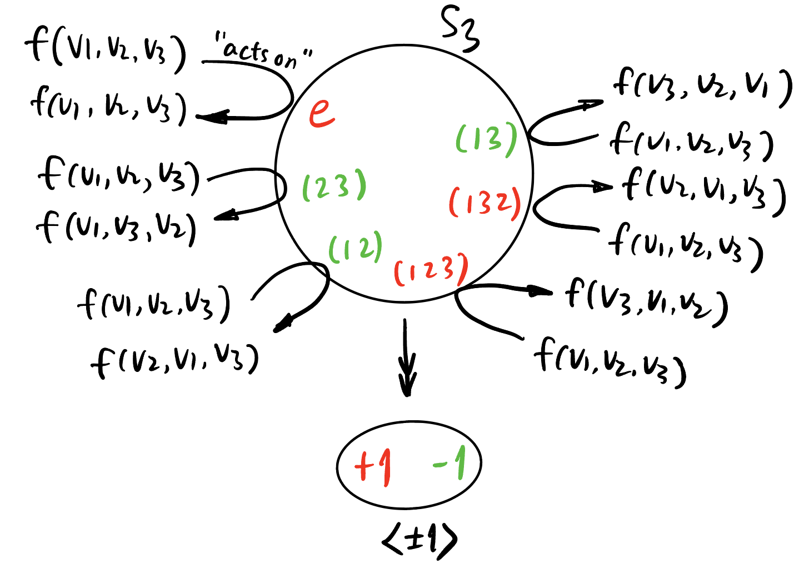

What is symmetry? 什么是对称性?
1 Discover Symmetry
You may have noticed these concepts:
1.1 (Additive) Even/Odd Functions
1 The reason why I do NOT define \(Sf = (f(\mathbf{v})+\overline{f(-\mathbf{v})})/2\) will be clear later.
As a special case of Theorem 1, any function \(f: \mathbb{R} \to \mathbb{R}\) is a sum of an even and an odd function: \[ f = \frac{(f(x) + f(-x))+(f(x) - f(-x))}{2}. \]
1.2 (Multiplicative) Even/Odd Functions
There are also multiplicative version of Definition 1 and Theorem 1:
2 \(\mathbb{R}^{\times} := \mathbb{R} \backslash \{0\}\).
1.3 Symmetric/Alternating Tensor
Though generally we cannot decompose an arbitrary tensor into a symmetric and alternating part, we could build them by introducing two operators:
3 \(\sigma f\) is defined by \((\sigma f)(v_1, v_2, \ldots, v_k) := f(v_{\sigma(1)}, v_{\sigma(2)}, \ldots, v_{\sigma(k)}).\)
1.4 Matrix
2 Symmetry as Group Action
2.1 Problem
Is there any way to unify these seemingly “symmetric” concepts? What kind of mathematical object can be symmetrize and and alternate? When does the object itself expressible by only its symmetrized and and alternated ones?
2.2 Important Observation
The common thing of the above examples in Section 1 is that the domain of the objects (functions, tensors, matrices4) could be manipulated by some kind of actions:
4 This is left as an exercise.
- \(f: \mathbb{R}^n \to \mathbb{C}\): additive inversion,
- \(f: (\mathbb{R}^{\times})^n \to \mathbb{C}\): multiplicative inversion,
- \(f: V^k \to \mathbb{R}\): permutation.
The first two can be viewed as the 2-element group \(S_2\) acts on the domain of \(f\), where \(S_2\) is the group generated by the operation of “taking inverse”: \[ S_2 := \langle\cdot^{-1}\rangle = \{e, \cdot^{-1}\}, \] or equivalently, the permutation group on two letters: \[ S_2 = \{e, (12)\}. \]
Therefore, in the first two cases, we could define a \(S_2\)-action: \[ (\sigma f)(\mathbf{v}) := \overline{f(\mathbf{v}^{-1})}, \] where \(\mathbf{v}^{-1}\) is either \(-\mathbf{v}\) (additive inverse) or \(1/\mathbf{v}\) (multiplicative inverse).
Therefore, the definition of the operator \(S\) and \(A\) in Definition 6 also applies for the first two cases: \[ Sf := \sum_{\sigma \in S_2} \sigma f = f(\mathbf{v}) + \overline{f(-\mathbf{v})} \quad (\text{or } f(\mathbf{v})\cdot \overline{f(-\mathbf{v})}), \] \[ Af := \sum_{\sigma \in S_k} \operatorname{sgn}(\sigma) \sigma f = f(\mathbf{v}) - \overline{f(-\mathbf{v})} \quad (\text{or } \frac{f(\mathbf{v})}{\overline{f(\mathbf{v}^{-1})}}). \]
2.3 When Decomposable?
In the first two cases, \(f\) can be expressed purely by \(Sf\) and \(Af\): \[ f = \frac{Sf + Af}{2} \quad (\text{or } \sqrt{Sf \cdot Af}), \] which is just the average of them! (Arithmetic average and geometric average respectively)
But we don’t have this relationship for tensors, i.e., not every rank \(k\) tensor can be purely expressed using \(Sf\) and \(Af\) – apart from the case when \(k = 2\): \[ f(v_1, v_2) = \frac{(f(v_1, v_2)+f(v_2, v_1))+(f(v_1, v_2)-f(v_2, v_1))}{2} = \frac{Sf + Af}{2}. \]
What happened when \(k \ge 3\)?
Let \(f: V^3 \to \mathbb{R}\), we have \[ Sf = f(v_1, v_2, v_3) + f(v_2, v_3, v_1) + f(v_3, v_1, v_2) + f(v_2, v_1, v_3) + f(v_1, v_3, v_2) + f(v_3, v_2, v_1), \] \[ Af = f(v_1, v_2, v_3) + f(v_2, v_3, v_1) + f(v_3, v_1, v_2) - f(v_2, v_1, v_3) - f(v_1, v_3, v_2) - f(v_3, v_2, v_1). \]

The result \[ \frac{Sf + Af}{2} = f(v_1, v_2, v_3) + f(v_2, v_3, v_1) + f(v_3, v_1, v_2) = \sum_{\sigma \in A_3} \sigma f \neq f, \] where \(A_3\) is the alternating group (the group of even permutations) on three letters.
2.4 Try Yourself!
Exercise 1 (\(S\) and \(A\) operator for matrices \(\phi\)) Let \(\phi \in \operatorname{End} (\mathbb{C}^n)\), derive the definition of \(S\phi\) and \(A \phi\).